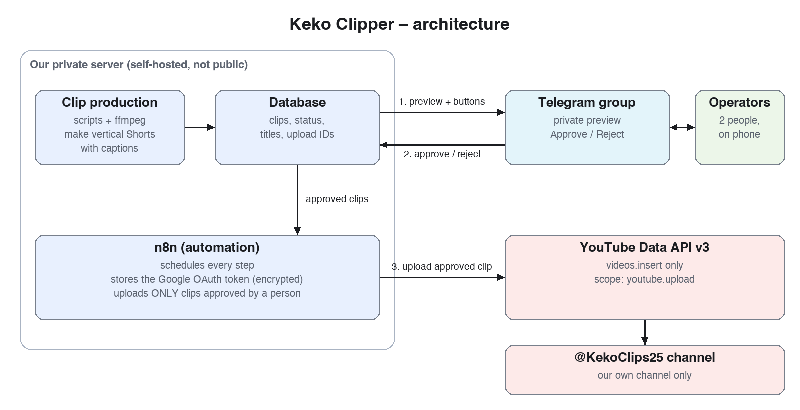
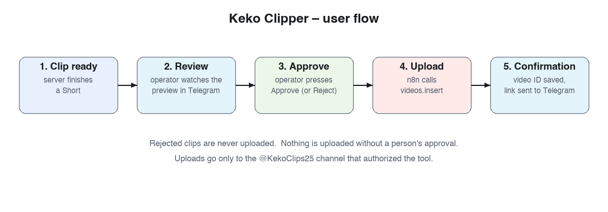

Keko Clipper
Keko Clipper is a private, internal tool used only by the two people who run the YouTube channel @KekoClips25. It is not offered to the public and has no user sign-up.
What it does
- Our own server prepares short vertical clips (YouTube Shorts) with captions.
- Each finished clip is sent to our private Telegram group, where one of us watches it and presses Approve or Reject.
- Only approved clips are uploaded to our own channel with the YouTube Data API (
videos.insert), with the title and description we wrote.
Every upload is reviewed by a person first. The tool never uploads to any other channel, never reads or changes other users' data, and does not use any other YouTube API method.
How it works
Architecture

User flow

Google sign-in
The channel owner authorizes the tool once with Google OAuth 2.0, scope https://www.googleapis.com/auth/youtube.upload.
The resulting token is stored only in our own automation server. It can be revoked at any time from
Google security settings.